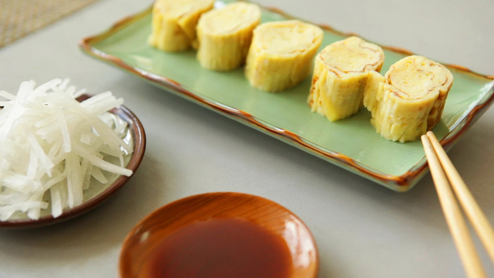

Tamagoyaki

A japanese household staple: a sweet and savory, fluffy egg omelette!
Makes for a great appetizer, or a great filling for a bento box.
Perfect for a light snack, or even as the centerpiece of a meal.
Ingredients
- 4 eggs
- 4 tablespoons of prepared dashi stock
- 1 tablespoon of white sugar
- 1 teaspoon of mirin
- 1/2 teaspoon of soy sauce
- 1/2 tablespoon of vegetable oil
Steps
-
Whisk eggs, dashi stock, sugar, mirin, and soy sauce together in a bowl.
-
Heat 1/3 of the oil in a large nonstick skillet over medium-high heat.
Add about 1/3 of the egg mixture and quickly swirl the pan to evenly
cover the bottom. Start rolling up the omelette from one side to the
other as soon as it is set.
-
Keep the roll to one side, then add another 1/3 of the oil to the
skillet and another 1/3 of the egg. Swirl the pan, ensuring the entire
bottom is covered, including around and underneath the first roll. Cook
until set. Roll up from the side containing the first roll, so that is
now at the center.
-
Repeat the process with the remaining oil and egg. Transfer rolled
omelette to a bamboo rolling mat. Roll up tightly and allow to cool for
a few minutes.
-
Unwrap the omelette and slice into 6 pieces. Serve warm or cold.